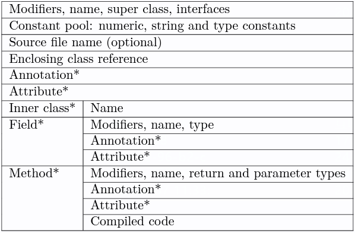
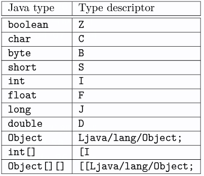
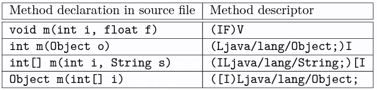
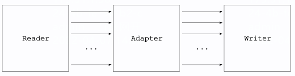
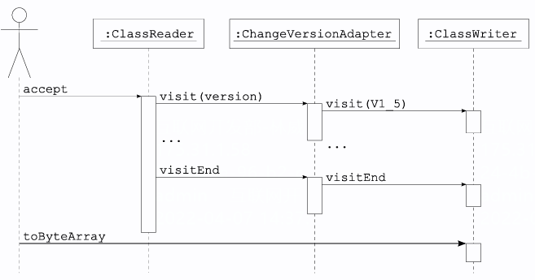

ASM - 字节码操作库
ASM 是一款广为使用的字节码操作库，很多 Gradle Transform 会用它对编译后的代码进行插桩和修改操作，源码仓库在 GitLab
访问者模式（Visitor pattern）
Visitor pattern represent an operation to be performed on the elements of an object structure. Visitor lets you define a new operation without changing the classes of the elements on which it operates.
访问者模式 是一种将数据结构与数据操作分离的设计模式，它封装一些作用于某种数据结构中的各元素的操作，可以在不改变数据结构的前提下定义作用于这些元素的新的操作，属于行为型模式
访问者模式被称为最复杂的设计模式，并且使用频率不高，设计模式的作者也评价为：大多情况下，你不需要使用访问者模式，但是一旦需要使用它时，那就真的需要使用了，其基本思想是：
- 针对系统中拥有固定类型数的对象结构（元素），在其内提供一个
accept()方法用来接受访问者对象的访问 - 不同的访问者对同一元素的访问内容不同，使得相同的元素集合可以产生不同的数据结果（视图）
accept()方法可以接收不同的访问者对象，然后在内部将自己（元素）转发到接收到的访问者对象的visit()方法内，访问者内部对应类型的visit()方法就会得到回调执行- 对元素进行操作也就是通过两次动态分发：第一次是对访问者分发
accept()方法，第二次是对元素的分发visit()方法，才最终将一个具体的元素传递到一个具体的访问者，如此一来就解耦了数据结构与操作，且数据操作不会改变元素状态
访问者模式的核心是解耦数据结构与数据操作，使得对元素的操作具备优秀的扩展性，可以通过扩展不同的数据操作类型（访问者）实现对相同元素集的不同的操作
ASM 概览
整个 ASM 库的核心概念是访问者模式
字节码（.class 文件）是一种固定格式的文件，它的数据结构如下图，对应的解析逻辑定义在 ClassReader，然后提供了 ClassVisitor、MethodVisitor、FieldVisitor 和 AnnotationVisitor 等各种 Visitor 来访问

ClassVisitor
ClassVisitor 提供了以下的 visitor 方法去访问对应的数据结构，下面以 java.lang.String 为例
public abstract class ClassVisitor {
public void visit(
int version, // 52
int access, // 49
String name, // java/lang/String
String signature, // Ljava/lang/Object;Ljava/io/Serializable;Ljava/lang/Comparable<Ljava/lang/String;>;Ljava/lang/CharSequence;
String superName, // java/lang/Object
String[] interfaces // java/io/Serializable,java/lang/Comparable,java/lang/CharSequence
)
// access:18, name:value, descriptor:[C, signature:null, value:null
// access:26, name:serialVersionUID, descriptor:J, signature:null, value:-6849794470754667710
// access:25, name:CASE_INSENSITIVE_ORDER, descriptor:Ljava/util/Comparator;, signature:Ljava/util/Comparator<Ljava/lang/String;>;, value:null
// ...
public FieldVisitor visitField(int access, String name, String descriptor, String signature, Object value)
// access:1, name:<init>, descriptor:(Ljava/lang/String;)V, signature:null, exceptions:null
// access:1, name:<init>, descriptor:([BIILjava/lang/String;)V, signature:null, exceptions:java/io/UnsupportedEncodingException
// access:1, name:getBytes, descriptor:(Ljava/lang/String;)[B, signature:null, exceptions:java/io/UnsupportedEncodingException
// access:9, name:valueOf, descriptor:(Ljava/lang/Object;)Ljava/lang/String;, signature:null, exceptions:null
// ...
public MethodVisitor visitMethod(int access, String name, String descriptor, String signature, String[] exceptions)
// name:java/lang/String$CaseInsensitiveComparator, outerName:java/lang/String, innerName:CaseInsensitiveComparator, access:10
public void visitInnerClass(String name, String outerName, String innerName, int access)
public void visitSource(String source, String debug)
public ModuleVisitor visitModule(String name, int access, String version)
public void visitNestHost(String nestHost)
public void visitOuterClass(String owner, String name, String descriptor)
public AnnotationVisitor visitAnnotation(String descriptor, boolean visible)
public AnnotationVisitor visitTypeAnnotation(int typeRef, TypePath typePath, String descriptor, boolean visible)
public void visitAttribute(Attribute attribute)
public void visitNestMember(String nestMember)
public void visitPermittedSubclass(String permittedSubclass)
public RecordComponentVisitor visitRecordComponent(String name, String descriptor, String signature)
public void visitEnd()
}描述符（descriptor）的规则和例子如下图：


version 是 class 文件格式的版本号，有如下版本号的定义：
interface Opcodes {
// Java ClassFile versions (the minor version is stored in the 16 most significant bits, and the
// major version in the 16 least significant bits).
int V1_1 = 3 << 16 | 45;
int V1_2 = 0 << 16 | 46;
int V1_3 = 0 << 16 | 47;
int V1_4 = 0 << 16 | 48;
int V1_5 = 0 << 16 | 49;
int V1_6 = 0 << 16 | 50;
int V1_7 = 0 << 16 | 51;
int V1_8 = 0 << 16 | 52;
int V9 = 0 << 16 | 53;
int V10 = 0 << 16 | 54;
int V11 = 0 << 16 | 55;
int V12 = 0 << 16 | 56;
int V13 = 0 << 16 | 57;
int V14 = 0 << 16 | 58;
int V15 = 0 << 16 | 59;
int V16 = 0 << 16 | 60;
int V17 = 0 << 16 | 61;
int V18 = 0 << 16 | 62;
int V19 = 0 << 16 | 63;
/**
* Version flag indicating that the class is using 'preview' features.
*
* <p>{@code version & V_PREVIEW == V_PREVIEW} tests if a version is flagged with {@code
* V_PREVIEW}.
*/
int V_PREVIEW = 0xFFFF0000;
}access 是修饰符控制位的组合，有以下控制位：
interface Opcodes {
// Access flags values, defined in
// - https://docs.oracle.com/javase/specs/jvms/se9/html/jvms-4.html#jvms-4.1-200-E.1
// - https://docs.oracle.com/javase/specs/jvms/se9/html/jvms-4.html#jvms-4.5-200-A.1
// - https://docs.oracle.com/javase/specs/jvms/se9/html/jvms-4.html#jvms-4.6-200-A.1
// - https://docs.oracle.com/javase/specs/jvms/se9/html/jvms-4.html#jvms-4.7.25
int ACC_PUBLIC = 0x0001; // class, field, method
int ACC_PRIVATE = 0x0002; // class, field, method
int ACC_PROTECTED = 0x0004; // class, field, method
int ACC_STATIC = 0x0008; // field, method
int ACC_FINAL = 0x0010; // class, field, method, parameter
int ACC_SUPER = 0x0020; // class
int ACC_SYNCHRONIZED = 0x0020; // method
int ACC_OPEN = 0x0020; // module
int ACC_TRANSITIVE = 0x0020; // module requires
int ACC_VOLATILE = 0x0040; // field
int ACC_BRIDGE = 0x0040; // method
int ACC_STATIC_PHASE = 0x0040; // module requires
int ACC_VARARGS = 0x0080; // method
int ACC_TRANSIENT = 0x0080; // field
int ACC_NATIVE = 0x0100; // method
int ACC_INTERFACE = 0x0200; // class
int ACC_ABSTRACT = 0x0400; // class, method
int ACC_STRICT = 0x0800; // method
int ACC_SYNTHETIC = 0x1000; // class, field, method, parameter, module *
int ACC_ANNOTATION = 0x2000; // class
int ACC_ENUM = 0x4000; // class(?) field inner
int ACC_MANDATED = 0x8000; // field, method, parameter, module, module *
int ACC_MODULE = 0x8000; // class
}MethodVisitor
- 修改函数里的代码，建议用 bytecode-viewer 对比源文件和修改文件的字节码，将它们之间的差异翻译为
MethodVisitor.visitXXX方法调用 - 使用
AdviceAdapter、GeneratorAdapter等辅助类
public abstract class MethodVisitor {
public void visitParameter(String name, int access)
public AnnotationVisitor visitAnnotationDefault()
public AnnotationVisitor visitAnnotation(String desc, boolean visible)
public AnnotationVisitor visitTypeAnnotation(int typeRef, TypePath typePath, String desc, boolean visible)
public AnnotationVisitor visitParameterAnnotation(int parameter, String desc, boolean visible)
public void visitAttribute(Attribute attr)
public void visitCode()
public void visitFrame(int type, int nLocal, Object[] local, int nStack, Object[] stack)
public void visitInsn(int opcode)
public void visitIntInsn(int opcode, int operand)
public void visitVarInsn(int opcode, int var)
public void visitTypeInsn(int opcode, String type)
public void visitFieldInsn(int opcode, String owner, String name, String desc)
public void visitMethodInsn(int opcode, String owner, String name, String desc)
public void visitMethodInsn(int opcode, String owner, String name, String desc, boolean itf)
public void visitInvokeDynamicInsn(String name, String desc, Handle bsm, Object... bsmArgs)
public void visitJumpInsn(int opcode, Label label)
public void visitLabel(Label label)
public void visitLdcInsn(Object cst)
public void visitIincInsn(int var, int increment)
public void visitTableSwitchInsn(int min, int max, Label dflt, Label... labels)
public void visitLookupSwitchInsn(Label dflt, int[] keys, Label[] labels)
public void visitMultiANewArrayInsn(String desc, int dims)
public AnnotationVisitor visitInsnAnnotation(int typeRef, TypePath typePath, String desc, boolean visible)
public void visitTryCatchBlock(Label start, Label end, Label handler, String type)
public AnnotationVisitor visitTryCatchAnnotation(int typeRef, TypePath typePath, String desc, boolean visible)
public void visitLocalVariable(String name, String desc, String signature, Label start, Label end, int index)
public AnnotationVisitor visitLocalVariableAnnotation(int typeRef, TypePath typePath, Label[] start, Label[] end, int[] index, String desc, boolean visible)
public void visitLineNumber(int line, Label start)
public void visitMaxs(int maxStack, int maxLocals)
public void visitEnd()
}
// 可以在方法的前面、后面或者前后织入字节码
public abstract class AdviceAdapter extends GeneratorAdapter implements Opcodes {
protected void onMethodEnter() {}
protected void onMethodExit(final int opcode) {}
}FieldVisitor
public abstract class FieldVisitor {
public AnnotationVisitor visitAnnotation(final String descriptor, final boolean visible)
public AnnotationVisitor visitTypeAnnotation(final int typeRef, final TypePath typePath, final String descriptor, final boolean visible)
public void visitAttribute(final Attribute attribute)
public void visitEnd()
}解析和访问 class
fun main(args: Array<String>) {
val reader = ClassReader("java.lang.String")
val printer = ClassPrinter()
reader.accept(printer, 0)
}
class ClassPrinter: ClassVisitor(ASM9) {
override fun visit(version: Int, access: Int, name: String?, signature: String?, superName: String?, interfaces: Array<out String>?) {
println(...)
}
// ...
}构造 class
// 构造如下一个接口
package pkg;
public interface Comparable extends Mesurable {
int LESS =-1;
int EQUAL = 0;
int GREATER = 1;
int compareTo(Object o);
}
// 利用一个特殊的 Visitor：ClassWriter 来动态构造 class
ClassWriter cw = new ClassWriter(0);
cw.visit(V1_5, ACC_PUBLIC + ACC_ABSTRACT + ACC_INTERFACE, "pkg/Comparable", null, "java/lang/Object", new String[] { "pkg/Mesurable" });
cw.visitField(ACC_PUBLIC + ACC_FINAL + ACC_STATIC, "LESS", "I", null, new Integer(-1)).visitEnd();
cw.visitField(ACC_PUBLIC + ACC_FINAL + ACC_STATIC, "EQUAL", "I", null, new Integer(0)).visitEnd();
cw.visitField(ACC_PUBLIC + ACC_FINAL + ACC_STATIC, "GREATER", "I", null, new Integer(1)).visitEnd();
cw.visitMethod(ACC_PUBLIC + ACC_ABSTRACT, "compareTo", "(Ljava/lang/Object;)I", null, null).visitEnd();
cw.visitEnd();
byte[] b = cw.toByteArray();
// 可以将生成的 class 保存在 Comparable.class 文件里待将来加载和使用
// 也可以通过 ClassLoader.defineClass 直接将其加载进来
class MyClassLoader extends ClassLoader {
public Class defineClass(String name, byte[] b) { // 将 defineClass 暴露出来
return defineClass(name, b, 0, b.length);
}
}
Class c = myClassLoader.defineClass("pkg.Comparable", b); // 直接加载进来转换已有的 class（Transforming）
如下图所示，ClassReader + ClassWriter = 将原有的 class 复制一份

byte[] b1 = ...;
ClassWriter cw = new ClassWriter(0);
ClassReader cr = new ClassReader(b1);
cr.accept(cw, 0);
byte[] b2 = cw.toByteArray(); // b2 represents the same class as b1如下图，往中间插入 Visitor 就可以高效地修改原有的 class

public class ChangeVersionAdapter extends ClassVisitor {
public ChangeVersionAdapter(ClassVisitor cv) {
super(ASM4, cv);
}
@Override
public void visit(int version, int access, String name, String signature, String superName, String[] interfaces) {
cv.visit(V1_5, access, name, signature, superName, interfaces);
}
}
byte[] b1 = ...
ClassReader cr = new ClassReader(b1);
ClassWriter cw = new ClassWriter(cr, 0);
ChangeVersionAdapter ca = new ChangeVersionAdapter(cw);
cr.accept(ca, 0);
byte[] b2 = cw.toByteArray();删除成员
// the following class adapter removes the information about outer and inner classes, as well as the name of the source file from which the class was compiled
// the resulting class remains fully functional, because these elements are only used for debugging purposes
// This is done by not forwarding anything in the appropriate visit methods
public class RemoveDebugAdapter extends ClassVisitor {
public RemoveDebugAdapter(ClassVisitor cv) { super(ASM4, cv); }
@Override public void visitSource(String source, String debug) {}
@Override public void visitOuterClass(String owner, String name, String desc) {}
@Override public void visitInnerClass(String name, String outerName, String innerName, int access) {}
}
// 删除指定的函数
public class RemoveMethodAdapter extends ClassVisitor {
private String mName;
private String mDesc;
public RemoveMethodAdapter( ClassVisitor cv, String mName, String mDesc) {
super(ASM4, cv);
this.mName = mName;
this.mDesc = mDesc;
}
@Override
public MethodVisitor visitMethod(int access, String name, String desc, String signature, String[] exceptions) {
if (name.equals(mName) && desc.equals(mDesc)) {
// do not delegate to next visitor-> this removes the method
return null;
}
return cv.visitMethod(access, name, desc, signature, exceptions);
}
}